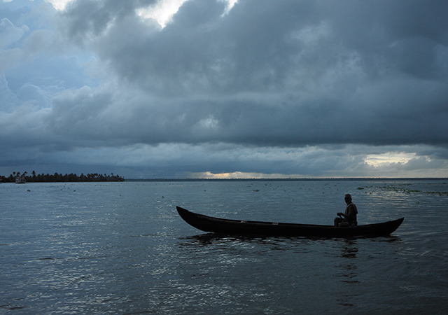
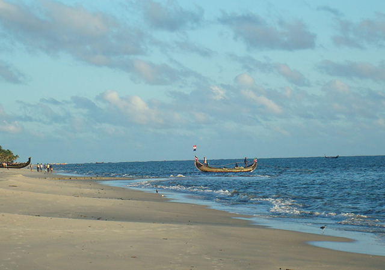
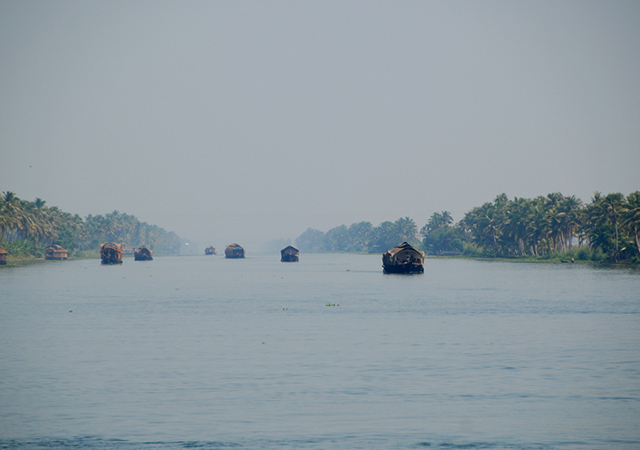
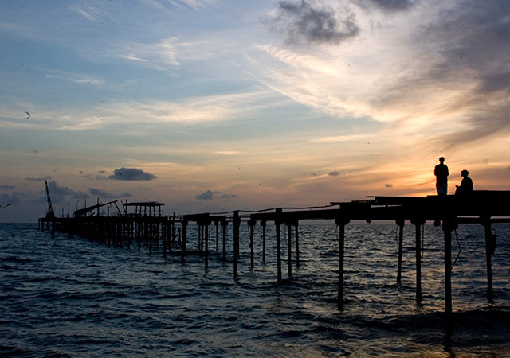
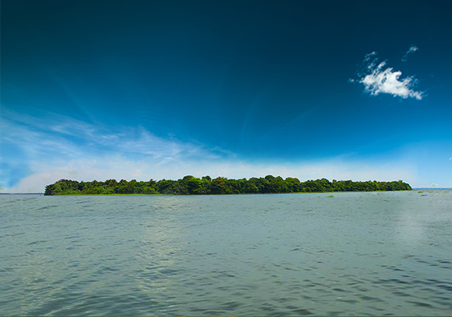

With the deep Arabian Sea lining its coast, Alappuzha nestles in the lap of nature, as an intricate grid of canals, lagoons, and waterways weaves through its landscape. Untouched by the snares of hectic urban routines, this timeless city has a rustic feel to it. From the rhythmic rowing of the chundan boats in the backwaters to the lush green stretches of paddy fields, each of its features casts a charming spell on travelers. The colorful and diverse culture, enriched by centuries of historical influences, only adds to its mystic allure.
Alappuzha, popularly known as Alleppey, is among Kerala’s historically phenomenal cities. Changing hands from the colonial powers of Portuguese and Dutch during 16th and 17th centuries, the city was eventually conquered by Marathanda Varma. The roots of the Syrian Catholic church can be traced in the city. Its vibrant culture and mesmerizing landscape have earned it the title of ‘Venice of the East'
1.Backwaters of Kuttanad
When you go along the backwaters of Kuttanad, you will get a chance to glimpse the bucolic way of life of the people and marvel at the exotic aquatic and avian life. The entire length of Kuttanad stretches for a distance of approximately 150 kilometres right from Kollam to Kochi and can be enjoyed through rice barges or houseboats. The house boat ride from Kollam to Alappuzha is a divine experience, but must be pre-booked if you want to enjoy it to its full advantage. You can make it a full-day tour or an overnight one if you want to savour a beautiful night under the stars

2. Marari Beach
Marari Beach is another favoured spot of visitors to Alappuzha, it being the ideal destination for those who want to explore the stunning backwaters of Kerala. There are plenty of resorts where you can stay and enjoy the scenery, while indulging in activities that form the traditional charm of Kerala. Tourists come to Marari to undergo Ayurvedic treatments and spas or to simply enjoy the backwaters.

3.Vembanad Lake
Vembanad Lake has a couple of accolades to its name. It is the largest lake in Kerala and also the longest. Many small lakes flow into the Vembanad Kayal making it long and ever-flowing. The lake is also well-known for its long saga of boat races, held during the Onam festival. The Vembanad Lake is the perfect vacation spot where you can dine on lots of freshly caught fish, indulge in a couple of fishing induced evenings yourself and just gaze into yonder.

4. Alleppey Beach
Alleppey Beach is one of the must visit beaches of Kerala. The intrinsic natural beauty of Alleppey Beach is what makes it so attractive to thousands of people visiting it. When you visit the beach, you can see the 137 year old ancient pier that stretches out into the beach. As you lounge in the beach, you can enjoy the mesmerising beauty of the dense palm groves and the imposing, but ancient lighthouse. Alleppey Beach is a place where you can unwind yourself, completely.

5. Pathiramanal
Pathiramanal Island is an island situated right on Vembanad Kayal, and comes under Muhamma panchayat in Kumarakom. The island is well known for its bird watching opportunities; so if you are a bird lover, this is where you must go. In the local language, Pathiramanal means “sands of night”. The view from the island is so mesmerising and amazing that you will never want to leave.
